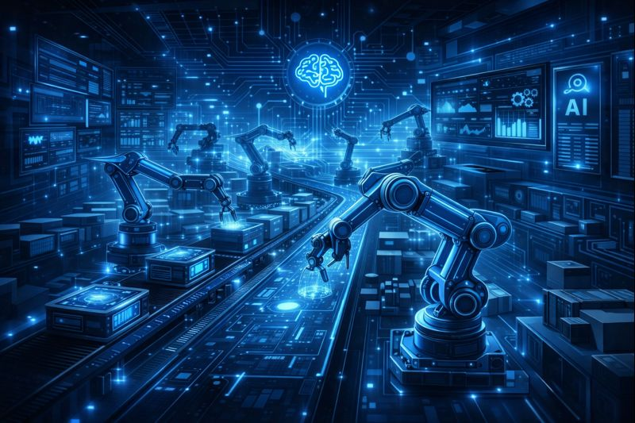

Manufacturing organizations must balance productivity, quality, and cost while operating complex production environments. ReadyHand AI delivers real-time intelligence and predictive insights to help manufacturers reduce downtime, optimize production, and improve operational efficiency.

Modern manufacturing generates massive volumes of machine, production, and operational data. Without intelligent analytics, inefficiencies, unplanned downtime, and quality issues can quickly impact profitability.
ReadyHand AI transforms production data into actionable intelligence, enabling proactive decision-making across the factory floor.
ReadyHand AI applies machine learning and real-time analytics to manufacturing data, helping teams predict failures, optimize production schedules, and maintain consistent product quality.
Detect equipment issues early and prevent costly breakdowns using AI-driven insights.
Improve throughput, reduce waste, and align production with demand forecasts.
Monitor KPIs and plant performance in real time through unified dashboards.
Identify defects early and ensure consistent quality across production lines.
Reduction in unplanned downtime
Improvement in production efficiency
Product quality & consistency
“ReadyHand AI helped us move from reactive maintenance to predictive operations, significantly reducing downtime and improving efficiency.”
— Plant Operations HeadWhether you operate a single plant or a global manufacturing network, ReadyHand AI helps you unlock efficiency, resilience, and intelligence across your production operations.
Reduce downtime and improve operational performance with real-time insights.
Optimize production schedules and eliminate inefficiencies.
Deploy AI-driven monitoring and analytics across manufacturing systems.